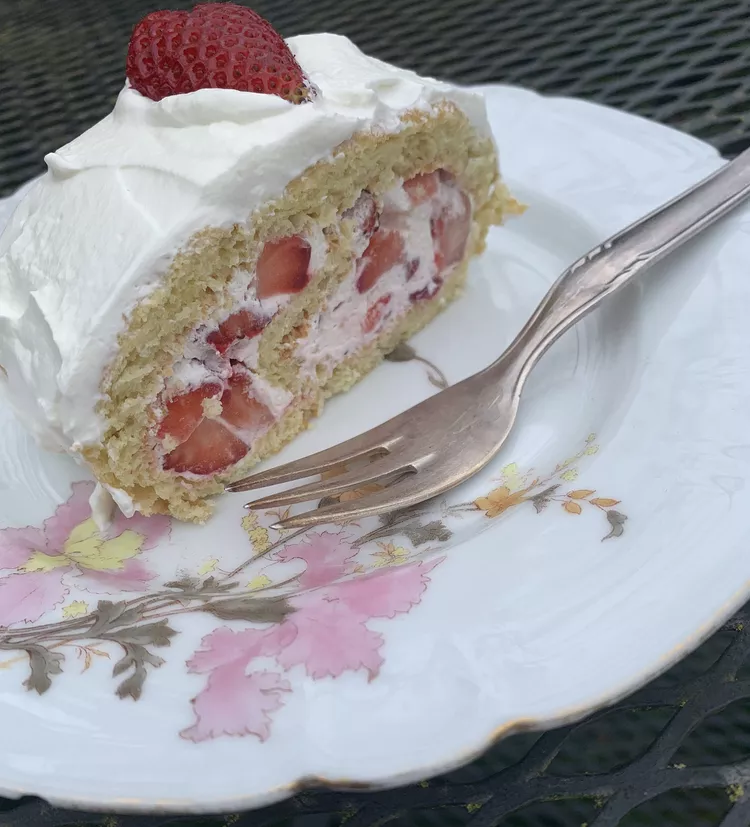

Home
German Strawberry Roll Recipe

Description:
This delightful German Strawberry Roll is a light and fluffy sponge cake rolled with a sweet strawberry filling. Perfect for spring and summer gatherings, this dessert is both visually appealing and delicious!
Ingredients:
- 4 large eggs
- 3/4 cup granulated sugar
- 1 teaspoon vanilla extract
- 1 cup all-purpose flour
- 1 teaspoon baking powder
- 1/4 teaspoon salt
- Powdered sugar, for dusting
- 1 cup heavy whipping cream
- 2 tablespoons powdered sugar (for whipped cream)
- 1 teaspoon vanilla extract (for whipped cream)
- 1 cup fresh strawberries, chopped
- 2 tablespoons strawberry jam (optional)
Instructions:
- Preheat your oven to 350°F (175°C). Line a 10x15 inch jelly roll pan with parchment paper and lightly grease it.
- In a large mixing bowl, beat the eggs and granulated sugar together using an electric mixer on high speed until thick and pale, about 5 minutes. Stir in the vanilla extract.
- In a separate bowl, whisk together the flour, baking powder, and salt. Gradually fold the dry ingredients into the egg mixture until just combined.
- Pour the batter into the prepared pan and spread it evenly. Bake for 12-15 minutes, or until the cake springs back when lightly touched.
- While the cake is baking, prepare a clean kitchen towel by sprinkling it generously with powdered sugar. Once the cake is done, immediately invert it onto the towel and carefully peel off the parchment paper. Starting from one of the short ends, roll the cake up in the towel. Let it cool completely while rolled up.
- In a mixing bowl, whip the heavy cream with powdered sugar and vanilla extract until stiff peaks form. Gently fold in the chopped strawberries.
- Once the cake is completely cool, unroll it gently. If desired, spread a thin layer of strawberry jam over the cake. Then spread the whipped cream and strawberry mixture evenly over the cake.
- Carefully re-roll the cake without the towel. Place it seam-side down on a serving platter. Dust with powdered sugar before serving.
- Slice and enjoy your delicious German Strawberry Roll!